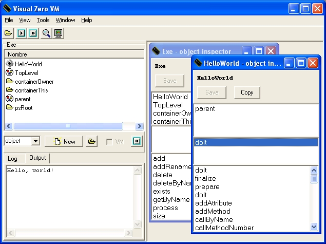
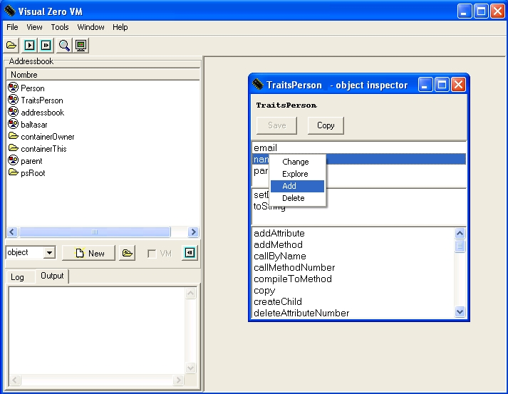
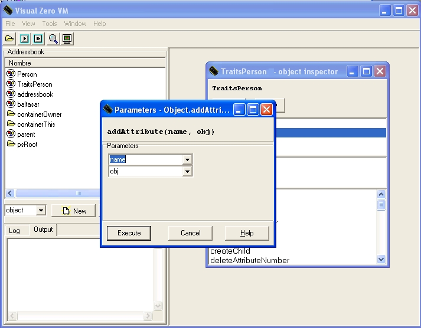
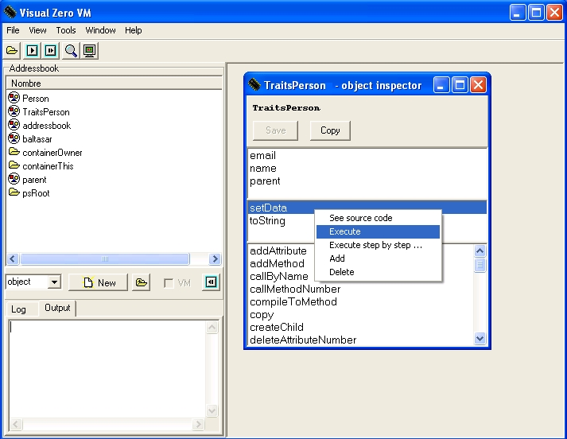
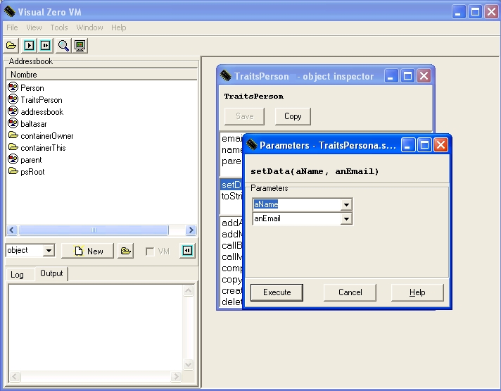
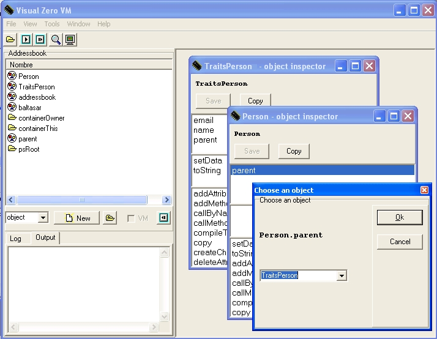
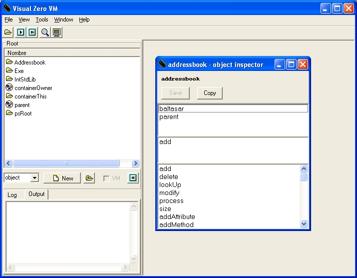

Index
An example, a simple address book, will be discussed through this section in order to show the interactive capabilities of this visual environment, as presented previously. Follows an image of the environment running a simple HelloWorld object.

Firstly,
a new object will be created to deal with personal information in the
address book. Once the environment is started, it is possible to
press new, having object chosen
in the list under the
container explorer, in order to create this object. The environment
will trigger the execution of the createChild()
method of the Object object, asking for its
parameters.
Actually, the only parameter needed is the object's name, so the
environment is thus asking for
the name
of the object. By entering “TraitsPerson”
(including
quotes), the
object representing all persons will be created. An object inspector
will open, showing the properties of the new TraitsPerson
object. The explorer is, as discussed before, divided in three
sections, up to down: attributes, own methods and inherited methods.
Although the object has been created successfully, it has no
information to hold or behaviour to offer. It is possible to solve
this by selecting the add attribute contextual menu
option or by choosing

addAttribute
in the inherited methods section, pressing the right button of the
mouse and selecting execute.
addAttribute
with them. The last step is to press Accept, in
order for the
VM to execute the given method.

When a method is executed, an object inspector with the properties of the object returned by the execution is displayed. In this case, it is not relevant, so its window can be closed, going back to the TraitsPerson object inspector. The new attribute appears now among the attributes of the object, the one that appears at the top of the explorer. It is possible to double-click it in order to see the object it is pointing to, a simple new String object.
The same steps taken for adding the name attribute to the TraitsPerson object, can be taken in order to create the attribute email, using this time the values "email" and "John@doe.com" as arguments. Again, the use double-quotes is needed here.
It would be
useful to be able to change the name and the e.mail of the person.
That behaviour must be accomplished by a method. In order to add a
method to a given object, the contextual menu option add can be used,
as well as executing directly the


addMethod
method inherited
from Object.
SET
aName, ASG name, SET anEmail,
ASG anEmail, changing each
comma by a
This
assembler code just assigns the object pointed by arguments and make
the attributes point to them. If the Compile button
is
pressed, then that instructions will become the new body of the
setInfo method. Once returned to the object
inspector for
TraitsPerson, it can be executed as any other method
in order
to verify its behaviour.carriage
return.
Now, using the controls
below the container explorer of the main window, a new object, called
Person, must be created in order to be able to
create new
persons by means of a copy operation. This new and empty object will
appear described by an object inspector if it is double-clicked in
the container explorer. In order to make it derive from TraitsPerson,
the parent attribute must be selected, and clicking
it with
the right button of the mouse, the change option
chosen from
the contextual menu.

copy
button of the object inspector. After providing the name of the
object, an exact copy of Person will
be created (which
is actually empty: the important concept right now is that it
inherits from TraitsPerson). For an example of Person
with one of the developers of Zero, the new name could be baltasar.
Once created, the object will appear in an object inspector. It is not linked to any container, so it will be lost as soon as the inspector is closed. Therefore it must be saved (using the appropriate button in the inspector) to be stored in the current container. As expected, the button Save on the top of the object inspector must be pressed. The object's name will now appear in the container explorer. Note that, as it happens in this example, the current container is Exe, the object will be lost when the VM finishes its execution.
Please take into account that it is possible to avoid separating Person and TraitsPerson, having only one object, namely Persona. But each time an object was created, all methods and attributes would be copied at the same time, which would make the copy very expensive. With this separation, methods exist only in one, shared, object (more or less similar to a class), while the state would be copied only each time a new object was created [15].
The object baltasar has been created, though its attributes have not been set properly. In order to achieve this, the setData method should be called with the appropriate arguments, which are “Baltasar” and “jbgarcia@pleasenospam.uvigo.es" , respectively.
It should be noted that attributes name and email are now part of the object baltasar. This happens because while not modified they share the very same attributes with TraitsPerson, but as soon as they are modified a new instance of these attributes is created in the object. This technique is called copy-on-write, which means that the duplication is done only when necessary.
Now it is needed to
introduce this Person instances in a data
structure, allowing
some kind of searching. The natural key would be the name of person,
which makes a map (an association between strings and objects) the
ideal structure. The standard library has a map, so it is possible to
create the new data structure just by inheriting from the Map
object in the IntStdLib container. In order to
achieve this, a
new object must be created (for example, addressbook)
and its
parent attribute must be changed (as explained above) to point to
Map, just by
introducing its reference: Map
(library objects are always reachable).
The map already provides an add()
method that takes a string and an object as arguments.

Although the main objects of the application have been created, they are stored in the Exe container. This container is always transient, which means that if we end the execution of the VM all the Person objects, the address book, etc., will be lost. In order to preserve these objects, they must be included in a persistent container. There are already some persistent containers available in the Zero persistent programming system. The root (psRoot), and the standard library container (psRoot.IntStdLib). None of these are appropriate for the needs of the exercise: the standard library should be only used to store objects like Map, String or Object, while storing objects of user applications in the root container is allowed but not correct: that behaviour would convert the persistent store in a mess of objects. The correct solution is to create a new container. In order to get to the root container, the parent container button must be pressed until the root container is reached (i.e., it is not possible to go up in the hierarchy any more, one click away from Exe). Then, “container” must be selected in the pull-down box and press new. A new container will be created under the root one, after entering its corresponding name which could be “Addressbook”.
Once the container has been created, the recently created objects should be stored inside it. In order to achieve this: the Addressbook container must be entered with a double-click in the container explorer and, again in the contextual menu of the container explorer, add objects should be chosen. That will trigger the execution of the add() method of the container object. In the dialogue window, select addressbook from the pull-down menu. The addressbook object will appear now as part of the Addresbook container.
Inserting the addressbook object is enough to have all remaining objects (TraitsPerson and baltasarPerson) inserted as well, just because of the relations among them. The addressbook object stores a reference to baltasarPerson, while baltasarPerson stores a reference (through the parent attribute) to the TraitsPerson object. The VM will follow all these references to determine which objects must be made persistent as well inside the container (this means that the effect will not be seen until the environment is closed and reopened, though the objects can always be inserted manually). On the other hand, Person, the prototype object created as a factory of new persons, will have to be copied explicitly (although this is not mandatory for this example).
If the environment is shut down now, these persistent objects will be stored. When open up again, the Addressbook container will be available under the root container, with the previously created objects inside it. These objects are now also available through other programs created with the compilers or the assembler. This shows how easy is to make an object persistent: just making a persistent object point to it with one of its attributes does the job. From the point of view, there is nothing as simple as this, not needing to worry about any saving/restore mechanism.
If a user interface is provided (which can be built with this programming environment or by any other of the available means), then the addressbook application will also be available for execution just by using the command-line VM.